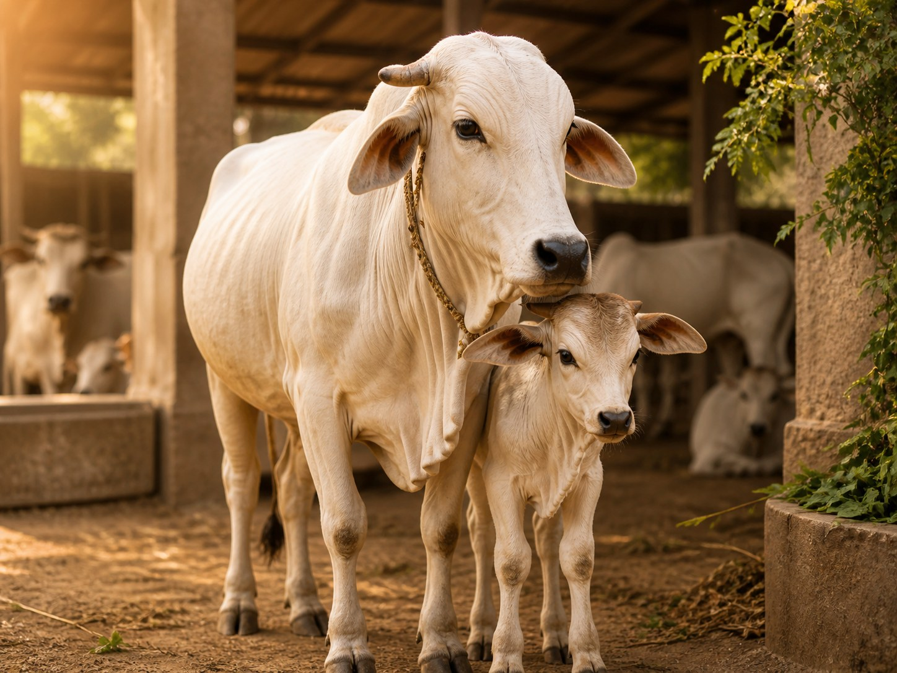
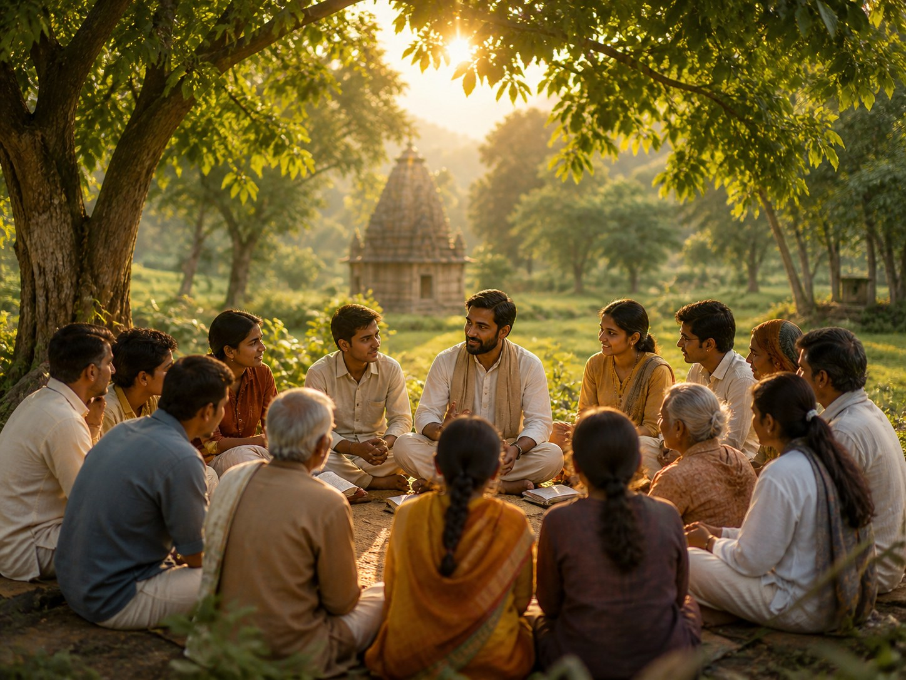
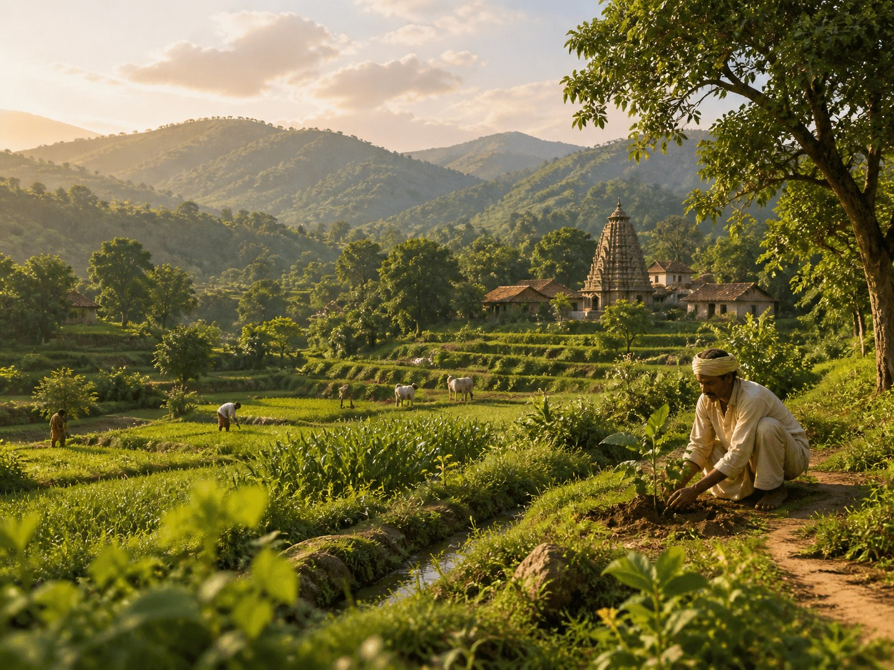
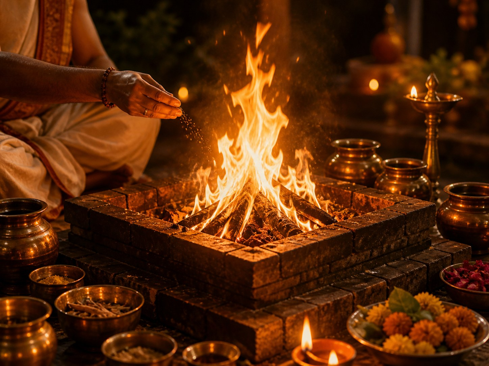

🐄
Gau Seva Program
Animal care, protection, shelters; care and protection of cows, gaushalas, nutrition, medical care, and support for abandoned, injured, and aged cows.
Vedic civilization gifted humanity Yoga, Ayurveda, Tantra, and sacred wisdom. Yet, modern humanity has become disconnected from nature and our spiritual roots. ADISHA exists to preserve Vedic knowledge, ecology, and education and transmit these living traditions to future generations.
In an age of disconnection and cultural erosion, our initiatives help reawaken sacred consciousness through Vedic Yagyas, ecological restoration, and conscious education.

Animal care, protection, shelters; care and protection of cows, gaushalas, nutrition, medical care, and support for abandoned, injured, and aged cows.
Women empowerment, education, quality learning, holistic development, honoring girls as embodiments of Shakti, and restoring dignity and strength.
Temple restoration; protect sacred ecosystems, ancient architecture, timeless rituals, and spiritual vibration.

Community building and education to create conscious communities rooted in truth while spreading Vedic values and dharma.

Environment, sustainability, rural development, ecological balance, sustainable practices, land stewardship, and rural empowerment.

Spiritual heritage of ancient wisdom. Sacred fire rituals invoke divine energies, purify the environment, and restore cosmic balance.
Vedic civilization is the last living ancient wisdom tradition of humanity, teaching harmony with nature, spiritual depth, and ecological balance. Preserving these sacred roots is about more than heritage — it is about healing the Earth and restoring human spiritual consciousness. Protecting temples, traditions, cows, forests, and Vedic knowledge safeguards the future of the planet.
Join us in supporting critical projects for the preservation and revival of Hindu civilization. Every contribution counts. Online donations will be available after the payment gateway is connected.